The system is built on codeigniter with the standards and code practices recommended in
official documentation. The system is fully tested and have no major bugs at it's core. Still there are any mis expectations, they will be fixed shortly in the updates.
The system is built on a "modular" approach. Every module like 'user / candidate / quiz' has separate files. e.g. (Controller, Model, Views Folder, Routes, Js). Like for a department module, there is
As recommended by CodeIgniter and other MVC frameworks, routes are used to simplify and create an ease in the request structure for the application. The Routes file can be located at
"root -> application -> config -> routes.php"
All backend / admin routes are prefixed with '/admin' and are in the beginning of the routes file.
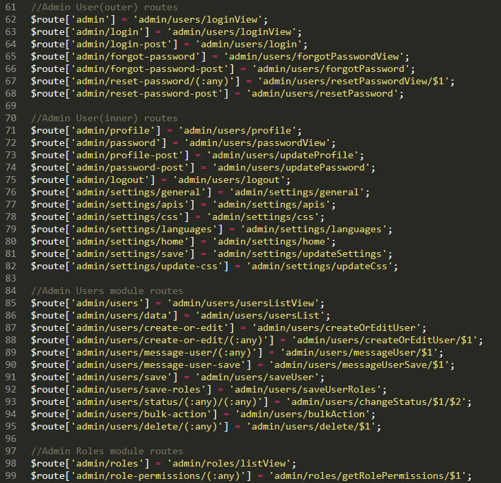
Controllers are core part of any MVC framework. All http requests lands on controller functions resolved via routes.
Admin controllers are located at : "root -> application -> controllers -> admin"
Front controllers are located at : "root -> application -> controllers"
The approach is followed to separate the backend functionality from the frontend.
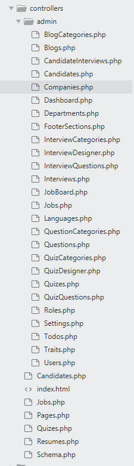
Models are core part of any MVC framework. Models are called via controller functions. All Database queries are written in in "Query Builder" feature of the CodeIgniter framework in models. The models for Backend/Admin are separate from the Frontend to accomplish "Loose Coupling" and to have an ease to modify the code. Models are located at
"root -> application -> models"
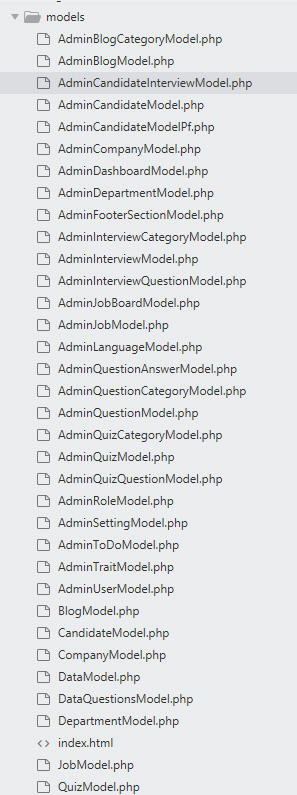
Views are third most integral part of any MVC framework. 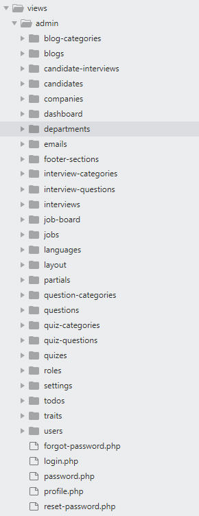 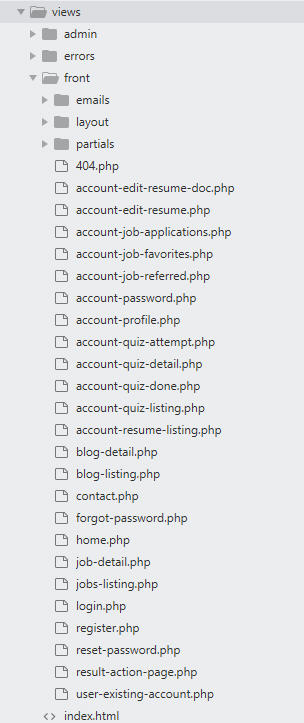
Admin views are located at : "root -> application -> views -> admin"
As in the pictures, views are arranged module wise.
Front views are located at : "root -> application -> views -> front"
Assets is the folder in the root where all the theme files (js, css and image) are stored. Also, as stated above this folder also contains the functional javascript files. Folders are separated for frontend and admin. 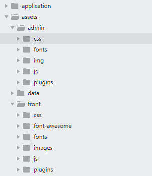
Assets are located at : "root -> application -> assets"
To avoid the hassle of creating ".sql files" and importing them manually, the complete database structure is written inside the application itself in the "SchemaModel.php" file. With the help of Codeigniter's "DBFORGE" class, all table definitions are written as separate functions in this file. You need to simply access the url like below and the whole database will be created. 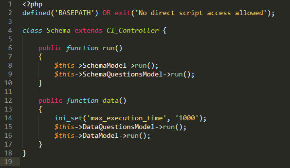 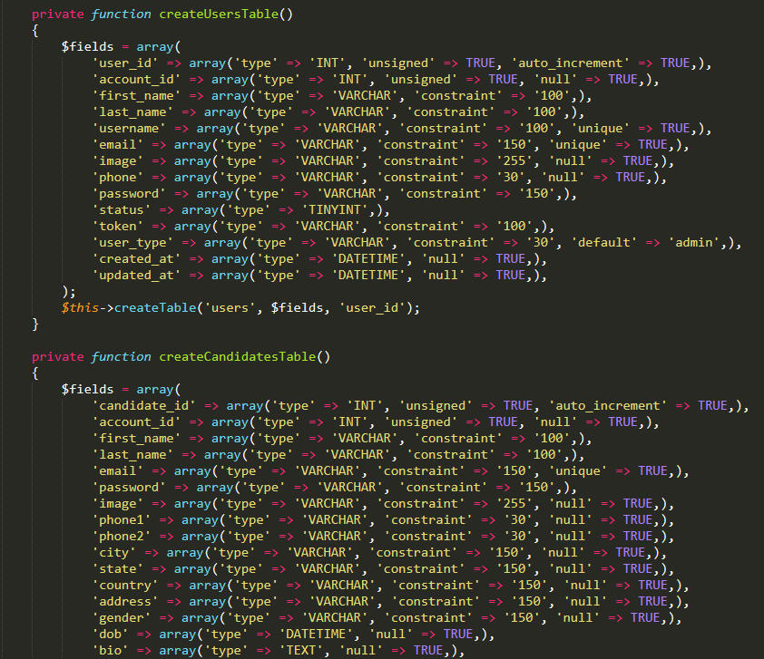
Note : The database information should already be there in "root -> application -> config -> database.php" file.
Route for creating schema : "https://www.example.com/schema"
Schema Class/Controller is located at : "root -> application -> controllers -> Schema.php"
To see the application in action and to explore all it's options, it is required that there is some data. For this purpose "DataModel.php" is created which can be accessed with the url below to import all the data. 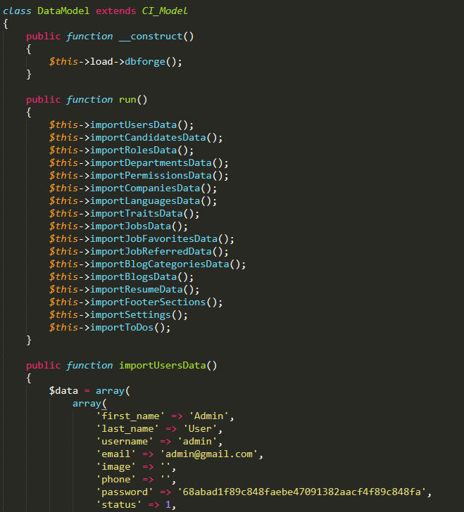
Route for importing data : "https://www.example.com/import-data"
Google Login Google client library is installed via composer and cleaned a bit to only have relevant code. The credentials for it to work are stored in database and the main client is written in the root/core controller. 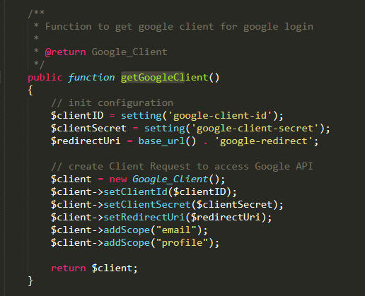 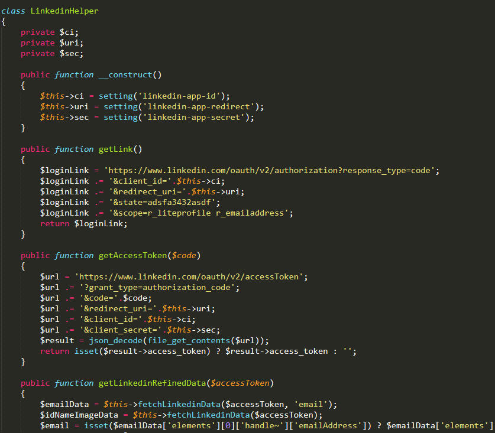 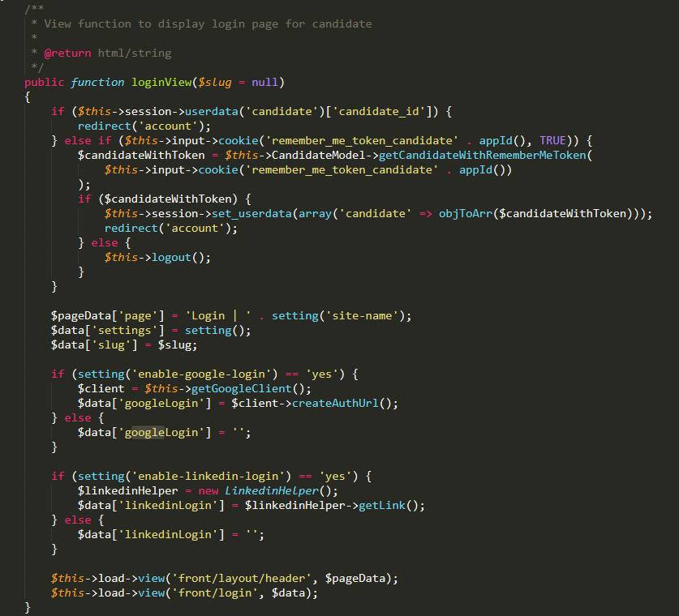
Linkedin Login The linkedin client is served via a helper stored in "application -> helpers -> linkedin_helper.php". The credentials are again stored in database.
Candidates.php (Front Controller) class where the above two features are implemented.
Datatables are used natively without any external dependency to avoid performance overhead. So, in five simple steps, datatable requests are done.
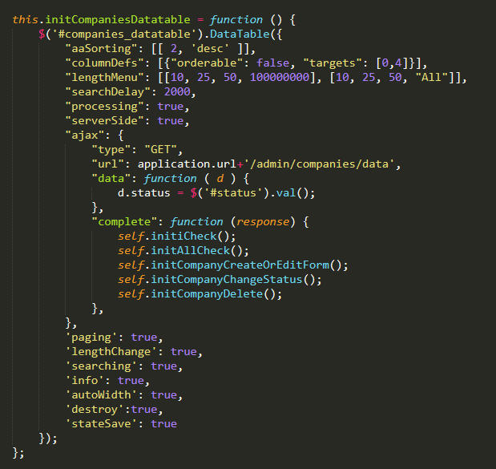 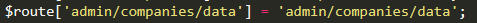 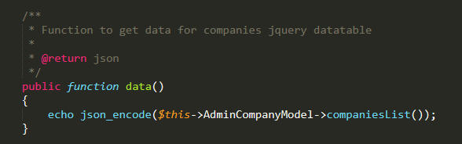 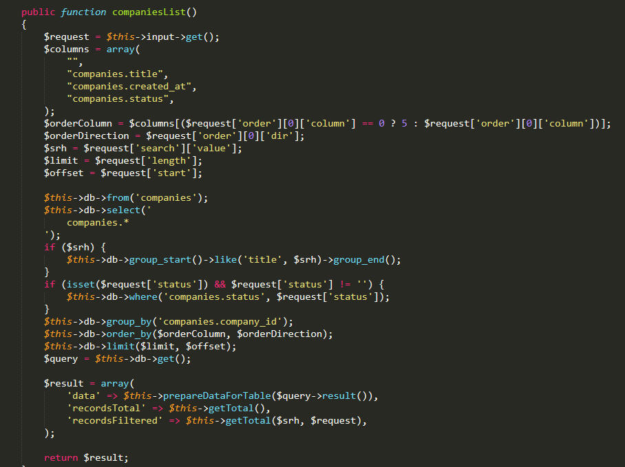 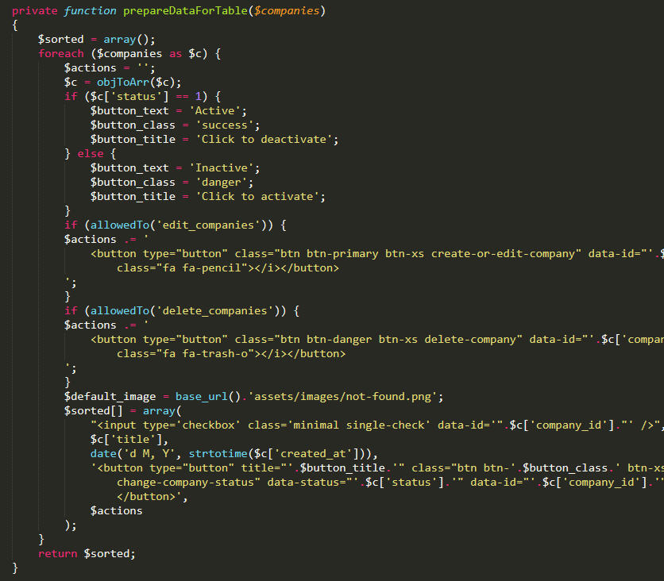
1. Request initiated from .js file with all the filters.
2. Request goes to routes.php file on this line as post request.
3. Request goes to controller function.
4. Request goes relevant model function and filters are implemented.
5. Request then goes to sort function and then finally returned to view from controller.
In this way, all of the admin datatables are working.
This file is one of the most important one in the system as it is the wrapper / abstract class for all the javascript functionalities like AJAX requests, form submissions, message display and other things. It is included in the main footer file for both admin and front end as separate copies.
The file is located at "root -> application -> assets -> -> admin -> js -> cf -> app.js"
and at "root -> application -> assets -> -> front -> js -> app.js"
All of the module js files are using functionalities from this class to maintain modifications and reusability. Module files as mentioned above are included in every module's index.php/list.php file.
Almost all crud operations are following this convention of routes in the whole application.
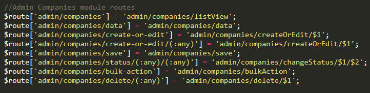 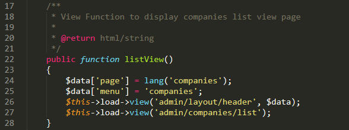 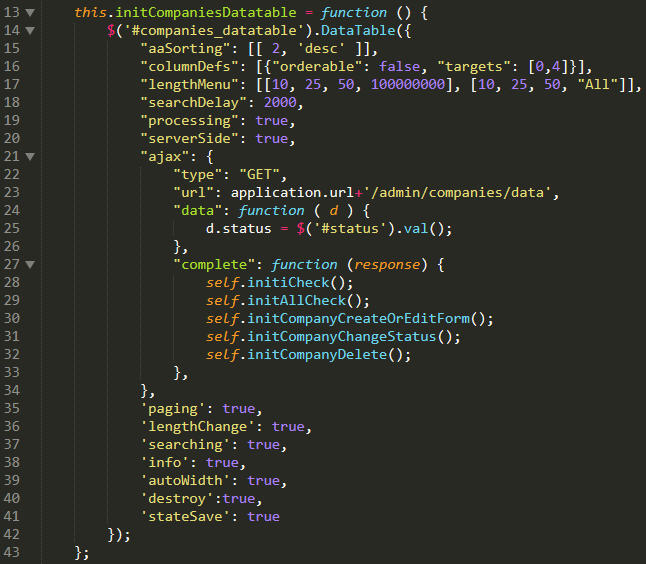 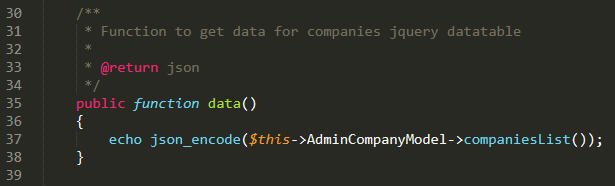 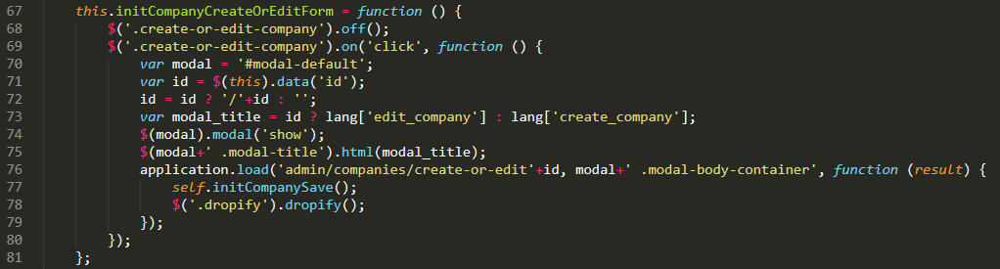 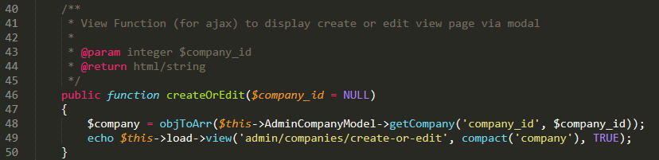 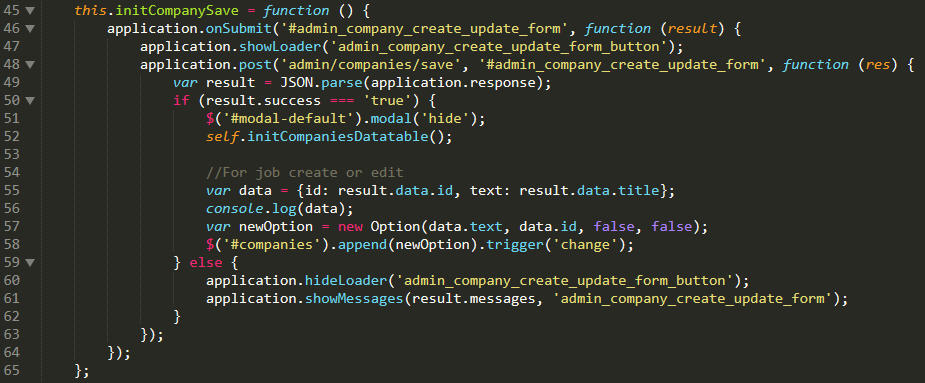 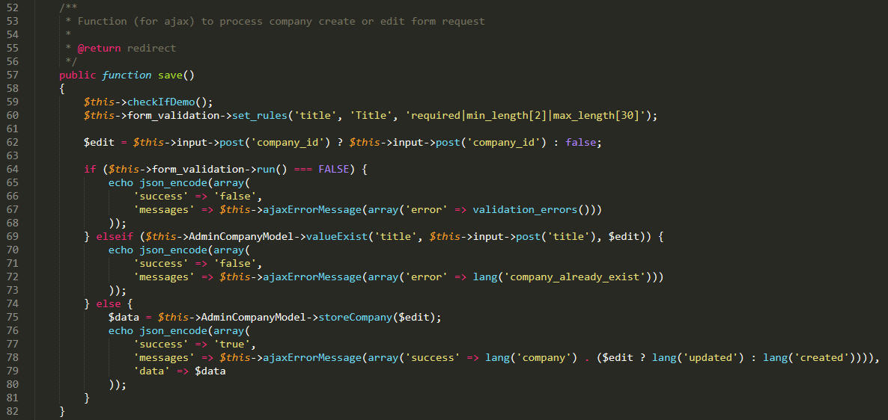 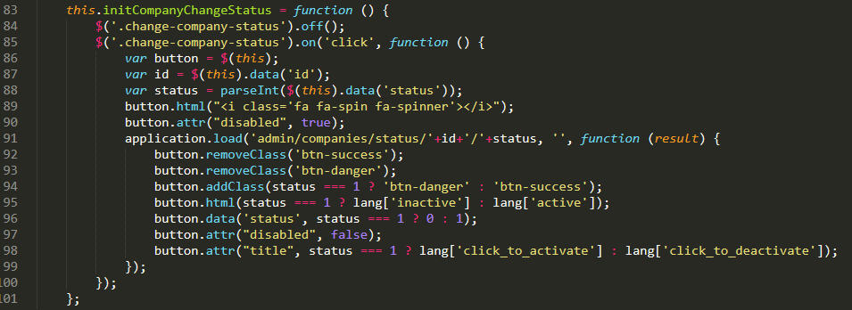 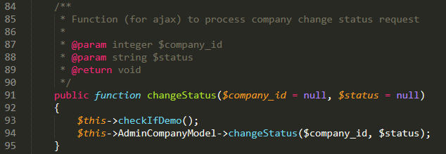 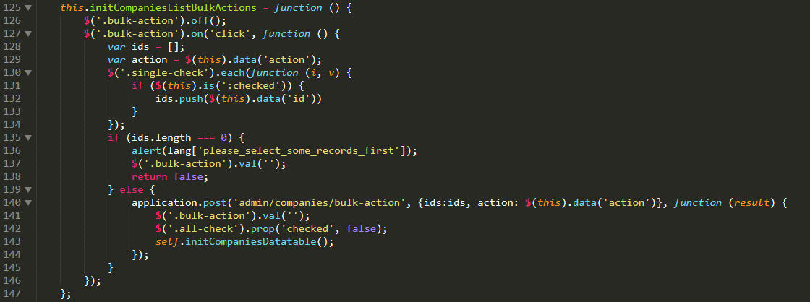 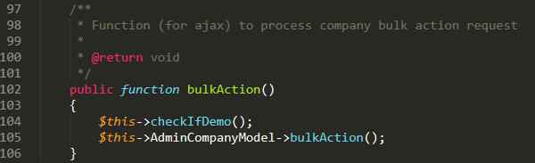
1a 'admin/companies'. First is for main page of module.
1b 'admin/companies/data'. This one is for main page as well which is requested as an ajax get request after the main page is loaded.
2a 'admin/companies/create-or-edit'. This routes is also requested via ajax get request and it loads the form from view partial into the modal.
2b 'admin/companies/create-or-edit/(:any)'. This is same is above but the difference here is that, it happens in "EDIT" scenario and the above happens in create scenario
3 'admin/companies/save'. When the forms loaded in '2a' and '2b' are submitted, they are submitted to this as ajax post request which either successfully stores the data or return any errors if any.
4 'admin/companies/status'. This route is again accessed via ajax get request and used to change the resource information to either active or inactive.
5 'admin/companies/bulk-action'. In listing screens of the application, there is an "Actions" menu which on selecting any item hit on this route via the below function.
CSRF protection is implemented in app.js with every request
CSRF token is generated and added in header.php file and adds to every request from app.js
Whenever any request is not via app.js, then form_open method of codeigniter is used which automatically adds token variable.
All queries are used with the help of codeigniter's "Active Records" which automatically prevents sql injection attacks.
XSS is implemented via the security helper of codeigniter on all post variables.
The "install" folder in the root of the application/script folder is written with native/core php and have no direct link with the application. As in the user documentation, when "https://www.example.com/install" is accessed, installation wizard starts. Also, it is written in index.php that if there is no env file in the root of the application, it will redirected to this url. 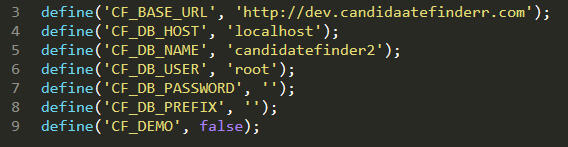
Installation is divided in three steps. It hits the application route "https://www.example.com/complete-install" route in the second step which creates the database and imports the data (dummy). This step also creates an env file with some constants which it gets during runtime from the environment and inputs and writes to this 'env.php' file.
The env is included in the codeigniter's main index.php file which can be removed as needed and constants needs to be removed from config/config.php and config/database.php.
As allowed by the standards of codeigniter and as required in any php application, there are some miscellaneous functions required for some small actions like application wise date formats, cutting large strings into small, sorting arrays etc. For these action, a file is included in "root -> application -> helpers -> functions_helper.php" and loaded in config/autoload.php so they are available in the application's global scope.
{kind=link}
{kind=link}
{kind=link}
{kind=link}
{kind=link}
{kind=link}
{kind=link}
{kind=link}
{kind=link}
{kind=link}
{kind=link}
{kind=link}
{kind=link}
{kind=link}
{kind=link}
{kind=link}
{kind=link}
{kind=link}
{kind=link}
{kind=link}
{kind=link}
{kind=link}
{kind=link}
{kind=link}
{kind=link}
{kind=link}
{kind=link}
{kind=link}
{kind=link}